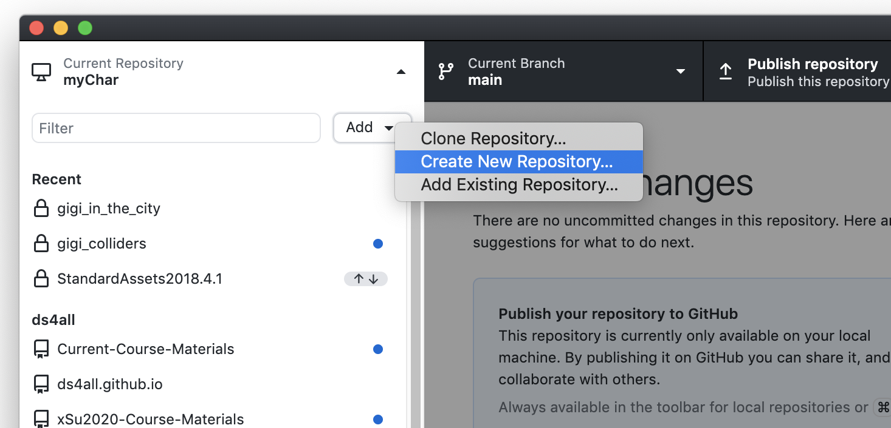
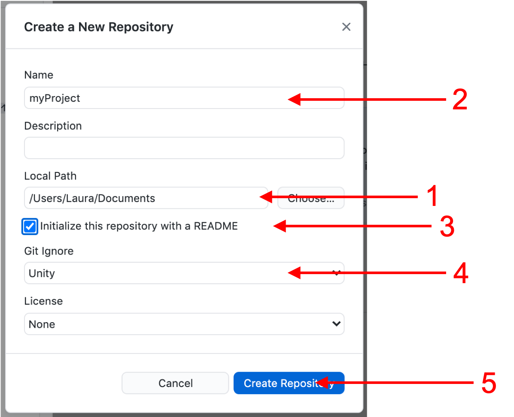

Unity and GitHub¶
Instructions for using GitHub with Unity Personal¶
For Unity Personal, GitHub integration is not included. This guide explains how to use GitHub with Unity Personal. The guide is written for Mac users, but the outlined procedure should be similar for Windows users. A prerequisite for this guide is having the GitHub Desktop application installed on your system. You may download GitHub Desktop here .

Begin by selecting an existing Unity project that you want to put under GitHub control. If you are creating a new project, create the project before creating the repository for it. Unity will not create a project in an existing directory.
For this example, assume we have created a Unity project in the directory
/Users/Laura/Documents/myProject
Follow the steps below to get the project under GitHub control:
Step 1: From the GitHub Desktop interface, select “Create New Repository”

Step 2: Refer to the figure below to fill in the popup window that appears.
Enter the parent directory of the existing Unity project in the Local Path field. In our example case, that would be “/Users/Laura/Documents”
Enter the name of the existing Unity project directory in the Name field. In our case, that would be “myProject”
Check the initialize with README box if you want to create a REAME.md for your repository (not required, but a good practice).
Be certain to select Unity in the Git Ignore field. If you neglect to do this, you will have to go find an appropriate .gitignore file to include. Also, all the superfluous files will be included with the initial import. Bottom line: don’t forget to do this.
Click on Create Repository to create the repository.
Done. If you are logged into your GitHub a/c, you should be immediately able to push the new repository to GitHub.

Step 3: (optional; for Mac users only)
Mac users may consider adding the following to their .gitignore files:
# OS generated files #
######################
.DS_Store
.DS_Store?
.Spotlight-V100
.Trashes
ehthumbs.db
Thumbs.db
MacOS generates a number of temporary files (some hidden, some not) that you will not want to add to your repository. Besides taking up space, these files will make it difficult for you to tell whether the local files you care about are synced to your repository. To avoid this, simply cut and paste the lines above to the end of your .git file.